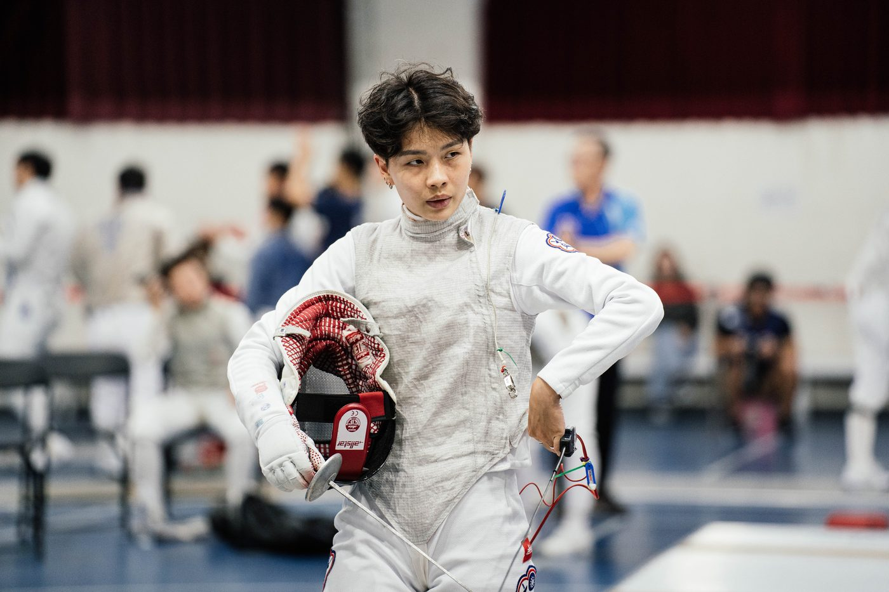
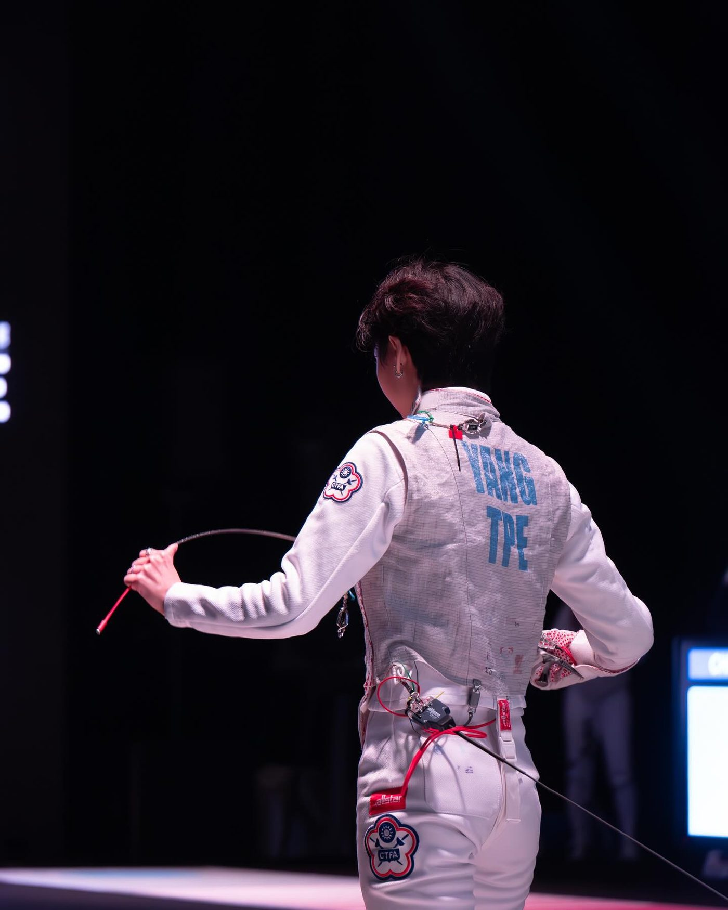
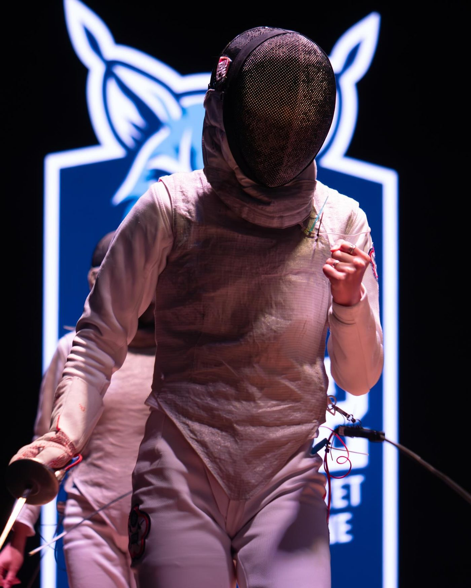
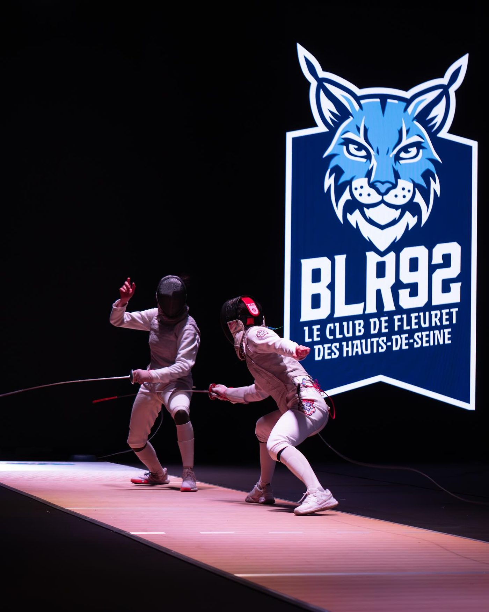

01我的故事
場上追求卓越表現，場下也兼顧學術
練劍至今邁入第15年，畢業於愛丁堡大學表現心理學碩士，曾為英國運動科學學會專業發展計畫受督生，現今在法國留學訓練。除此之外，長期關注運動員的心理健康、體育人才發展環境，以及運動中的性別議題，2025年出版台灣第一本專屬女性運動員的實用工具書，期許自己在往後幾年的國際舞台更創高峰以外，也在未來成為表現心理學家，利用自己的專業知識為臺灣體育環境貢獻一份心力。



